- Draw a circuit with resistors in parallel and in series.
- Calculate the voltage drop of a current across a resistor using Ohm’s law.
- Contrast the way total resistance is calculated for resistors in series and in parallel.
- Explain why total resistance of a parallel circuit is less than the smallest resistance of any of the resistors in that circuit.
- Calculate total resistance of a circuit that contains a mixture of resistors connected in series and in parallel.
sMost circuits have more than one component, called aresistorthat limits the flow of charge in the circuit. A measure of this limit on charge flow is calledresistance. The simplest combinations of resistors are the series and parallel connections illustrated in Figure . The total resistance of a combination of resistors depends on both their individual values and how they are connected.
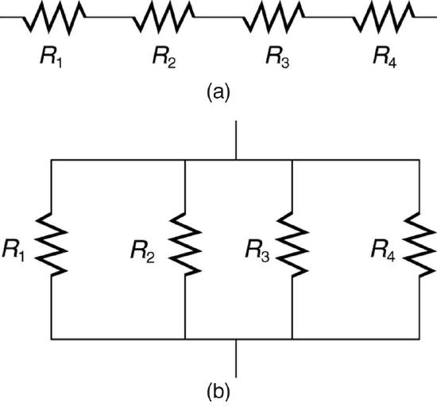
When are resistors inseries? Resistors are in series whenever the flow of charge, called thecurrent, must flow through devices sequentially. For example, if current flows through a person holding a screwdriver and into the Earth, then \(R_{1}\) in Figure (a) could be the resistance of the screwdriver’s shaft, \(R_{2}\) the resistance of its handle, \(R_{3}\) the person’s body resistance, and \(R_{4}\) the resistance of her shoes.
Figure \(\PageIndex {2}\) shows resistors in series connected to avoltagesource. It seems reasonable that the total resistance is the sum of the individual resistances, considering that the current has to pass through each resistor in sequence. (This fact would be an advantage to a person wishing to avoid an electrical shock, who could reduce the current by wearing high-resistance rubber-soled shoes. It could be a disadvantage if one of the resistances were a faulty high-resistance cord to an appliance that would reduce the operating current.)
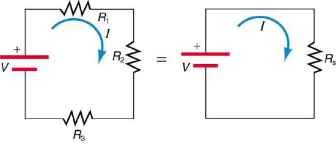
To verify that resistances in series do indeed add, let us consider the loss of electrical power, called avoltage drop, in each resistor in Figure \(\PageIndex {2}\).
According toOhm’s law, the voltage drop, \(V\), across a resistor when a current flows through it is calculated using the equation \(V=IR\), where \(I\) equals the current in amps (A) and \(R\) is the resistance in ohms\((\Omega)\). Another way to think of this is that \(V\) is the voltage necessary to make a current \(I\) flow through a resistance \(R\).
So the voltage drop across \(R_{1}\) is \(V_{1}=IR_{1}\), that across \(V_{2}=IR_{2}\), and that across \(R_{3}\) is \(V_{3}=IR_{3}\). The sum of these voltages equals the voltage output of the source; that is,
This equation is based on the conservation of energy and conservation of charge. Electrical potential energy can be described by the equation \(\mathrm{PE}=qV\), where \(q\) is the electric charge and \(V\) is the voltage. Thus the energy supplied by the source is \(qV\), while that dissipated by the resistors is
CONNECTIONS: CONSERVATION LAWS
The derivations of the expressions for series and parallel resistance are based on the laws of conservation of energy and conservation of charge, which state that total charge and total energy are constant in any process. These two laws are directly involved in all electrical phenomena and will be invoked repeatedly to explain both specific effects and the general behavior of electricity.
These energies must be equal, because there is no other source and no other destination for energy in the circuit. Thus, \(qV=qV_{1}+qV_{2}+qV_{3}\). The charge \(q\) cancels, yielding \(V=V_{1}+V_{2}+V_{3}\), as stated. (Note that the same amount of charge passes through the battery and each resistor in a given amount of time, since there is no capacitance to store charge, there is no place for charge to leak, and charge is conserved.)
Now substituting the values for the individual voltages gives
Note that for the equivalent single series resistance \(R_{\mathrm{S}}\), we have
This implies that the total or equivalent series resistance \(R_{\mathrm{S}}\) of three resistors is \(R_{\mathrm{S}}=R_{1}+R_{2}+R_{3}\).
This logic is valid in general for any number of resistors in series; thus, the total resistance \(R_{\mathrm{S}}\) of a series connection is
as proposed. Since all of the current must pass through each resistor, it experiences the resistance of each, and resistances in series simply add up.
Suppose the voltage output of the battery in Figure is \(12.0\mathrm{V}\), and the resistances are \(R_{1}=1.00\Omega\), \(R_{2}=6.00\Omega\), and \(R_{3}=13.0\Omega\). (a) What is the total resistance? (b) Find the current. (c) Calculate the voltage drop in each resistor, and show these add to equal the voltage output of the source. (d) Calculate the power dissipated by each resistor. (e) Find the power output of the source, and show that it equals the total power dissipated by the resistors.
Strategy and Solution for (a)
The total resistance is simply the sum of the individual resistances, as given by this equation:
Strategy and Solution for (b)
The current is found using Ohm’s law, \(V=IR\). Entering the value of the applied voltage and the total resistance yields the current for the circuit:
Strategy and Solution for (c)
The voltage—or \(IR\) drop—in a resistor is given by Ohm’s law. Entering the current and the value of the first resistance yields
The three \(IR\) drops add to \(12.0\mathrm{V}\), as predicted:
Strategy and Solution for (d)
The easiest way to calculate power in watts (W) dissipated by a resistor in a DC circuit is to useJoule’s law, \(P=IV\), where \(P\) is electric power. In this case, each resistor has the same full current flowing through it. By substituting Ohm’s law \(V=IR\) into Joule’s law, we get the power dissipated by the first resistor as
Power can also be calculated using either \(P=IV\) or \(P=\dfrac{V^{2}}{R}\), where \(V\) is the voltage drop across the resistor (not the full voltage of the source). The same values will be obtained.
Strategy and Solution for (e)
The easiest way to calculate power output of the source is to use \(P=IV\), where \(V\) is the source voltage. This gives
Note, coincidentally, that the total power dissipated by the resistors is also 7.20 W, the same as the power put out by the source. That is,
Power is energy per unit time (watts), and so conservation of energy requires the power output of the source to be equal to the total power dissipated by the resistors.
MAJOR FEATURES OF RESISTORS IN SERIES
Figure shows resistors inparallel, wired to a voltage source. Resistors are in parallel when each resistor is connected directly to the voltage source by connecting wires having negligible resistance. Each resistor thus has the full voltage of the source applied to it.
Each resistor draws the same current it would if it alone were connected to the voltage source (provided the voltage source is not overloaded). For example, an automobile’s headlights, radio, and so on, are wired in parallel, so that they utilize the full voltage of the source and can operate completely independently. The same is true in your house, or any building. (See Figure (b).)
![Part a shows two electrical circuits which are compared. The first electrical circuit is arranged with resistors in parallel. The circuit has three paths, with a voltage source V at one end. Just after the voltage source, the circuit has current I. The first path has resistor R sub one and current I sub one after the resistor. The second path has resistor R sub two and current I sub two after the resistor. The third path has resistor R sub three with current I sub three after the resistor. The first circuit is equivalent to the second circuit. The second circuit has a voltage source V and an equivalent parallel resistance R sub p. Part b shows a complicated electrical wiring diagram of a distribution board that supplies electricity to a house.](images/ch21/fig21-4-part-a-shows-two-electrical-circuits-whi.jpg)
To find an expression for the equivalent parallel resistance \(R_{\mathrm{p}}\), let us consider the currents that flow and how they are related to resistance. Since each resistor in the circuit has the full voltage, the currents flowing through the individual resistors are \(I_{1}=\dfrac{V}{R_{1}}\), \(I_{2}=\dfrac{V}{R_{2}}\), and \(I_{3}=\dfrac{V}{R_{3}}\). Conservation of charge implies that the total current \(I\) produced by the source is the sum of these currents:
Substituting the expressions for the individual currents gives
Note that Ohm’s law for the equivalent single resistance gives
The terms inside the parentheses in the last two equations must be equal. Generalizing to any number of resistors, the total resistance \(R_{\mathrm{p}}\) of a parallel connection is related to the individual resistances by
This relationship results in a total resistance \(R_{\mathrm{p}}\) that is less than the smallest of the individual resistances. (This is seen in the next example.) When resistors are connected in parallel, more current flows from the source than would flow for any of them individually, and so the total resistance is lower.
Let the voltage output of the battery and resistances in the parallel connection in Figure be the same as the previously considered series connection: \(V=12.0\mathrm{V},\: R_{1}=1.00\Omega,\: R_{2}=6.00\Omega\), and \(R_{3}=13.0\Omega\). (a) What is the total resistance? (b) Find the total current. (c) Calculate the currents in each resistor, and show these add to equal the total current output of the source. (d) Calculate the power dissipated by each resistor. (e) Find the power output of the source, and show that it equals the total power dissipated by the resistors.
Strategy and Solution for (a)
The total resistance for a parallel combination of resistors is found using the equation below. Entering known values gives
(Note that in these calculations, each intermediate answer is shown with an extra digit.)
We must invert this to find the total resistance \(R_{\mathrm{p}}\). This yields
The total resistance with the correct number of significant digits is \(R_{\mathrm{p}}=0.804\Omega\).
Strategy and Solution for (b)
The total current can be found from Ohm’s law, substituting \(R_{\mathrm{p}}\) for the total resistance. This gives
Current \(i\) for each device is much larger than for the same devices connected in series (see the previous example). A circuit with parallel connections has a smaller total resistance than the resistors connected in series.
Strategy and Solution for (c)
The individual currents are easily calculated from Ohm’s law, since each resistor gets the full voltage. Thus,
The total current is the sum of the individual currents:
This is consistent with conservation of charge.
Strategy and Solution for (d)
The power dissipated by each resistor can be found using any of the equations relating power to current, voltage, and resistance, since all three are known. Let us use \(P=\dfrac{V^{2}}{R}\), since each resistor gets full voltage. Thus,
The power dissipated by each resistor is considerably higher in parallel than when connected in series to the same voltage source.
Strategy and Solution for (e)
The total power can also be calculated in several ways. Choosing \(P=IV\), and entering the total current, yields
Total power dissipated by the resistors is also 179 W:
This is consistent with the law of conservation of energy.
Note that both the currents and powers in parallel connections are greater than for the same devices in series.
MAJOR FEATURES OF RESISTORS IN PARALLEL
More complex connections of resistors are sometimes just combinations of series and parallel. These are commonly encountered, especially when wire resistance is considered. In that case, wire resistance is in series with other resistances that are in parallel.
Combinations of series and parallel can be reduced to a single equivalent resistance using the technique illustrated in Figure . Various parts are identified as either series or parallel, reduced to their equivalents, and further reduced until a single resistance is left. The process is more time consuming than difficult.
![The diagram has a set of five circuits. The first circuit has a combination of seven resistors in series and parallel combinations. It has a resistor R sub one in series with a set of three resistors R sub two, R sub three, and R sub four in parallel and connected in series with a combination of resistors R sub five and R sub six, which are parallel. A resistor R sub seven is connected in parallel to R sub one and the voltage source. The second circuit calculates combinations of all parallel resistors in circuit one and replaces them with their equivalent resistance. It has a resistor R sub one in series with R sub p and R sub p prime. A resistor R sub seven is connected in parallel to R sub one and the voltage source. The third circuit takes the combination of the series resistors R sub p and R sub p prime and replaces it with R sub s. It has a resistor R sub one in series with R sub s. A resistor R sub seven is connected in parallel to R sub s and the voltage source. The fourth circuit shows a parallel combination of R sub seven and R sub s are calculated and replaced by R sub p double prime. The circuit now has a series combination voltage source, R sub one and R sub p double prime. The fifth circuit shows the final equivalent of the first circuit. It has a voltage source connecting across a final equivalent resistance R sub s prime.](images/ch21/fig21-5-the-diagram-has-a-set-of-five-circuits-t.jpg)
The simplest combination of series and parallel resistance, shown in Figure , is also the most instructive, since it is found in many applications. For example, \(R_{1}\) could be the resistance of wires from a car battery to its electrical devices, which are in parallel. \(R_{2}\) and \(R_{3}\) could be the starter motor and a passenger compartment light. We have previously assumed that wire resistance is negligible, but, when it is not, it has important effects, as the next example indicates.
Figure shows the resistors from the previous two examples wired in a different way—a combination of series and parallel. We can consider \(R_1\) to be the resistance of wires leading to \(R_2\) and \(R_3\). (a) Find the total resistance. (b) What is the \(IR\) drop in \(R_1\)? (c) Find the current \(I_2\) through \(R_2\). (d) What power is dissipated by \(R_2\)?
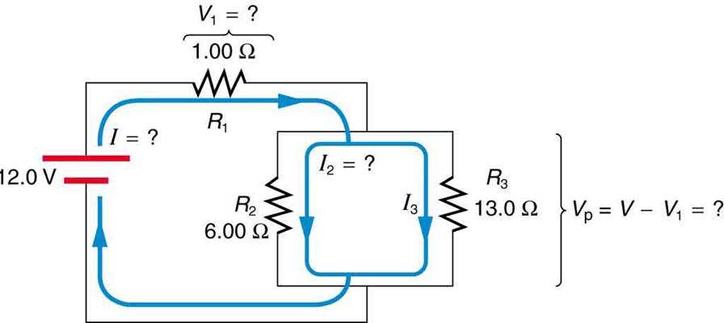
Strategy and Solution for (a)
To find the total resistance, we note that \(R_2\) and \(R_3\) are in parallel and their combination \(R_p\) is in series with \(R_1\). Thus the total (equivalent) resistance of this combination is \[R_{tot} = R_1 + R_2.\]
First, we find \(R_p\) using the equation for resistors in parallel and entering known values: \[\dfrac{1}{R_p} = \dfrac{1}{R_2} + \dfrac{1}{6.00 \, \Omega} + \dfrac{1}{13.0 \, \Omega} = \dfrac{0.2436}{\Omega}.\]
Inverting gives \[R_p = \dfrac{1}{0.2436}\Omega = 4.11 \, \Omega.\] So the total resistance is \[R_{tot} = R_1 + R_p = 1.00 \Omega + 4.11 \Omega = 5.11 \, \Omega.\]
The total resistance of this combination is intermediate between the pure series and pure parallel values (\(20.0 \, \Omega\) and \(0.804 \, \Omega\), respectively) found for the same resistors in the two previous examples.
Strategy and Solution for (b)
To find the \(IR\) drop in \(R_1\), we note that the full current \(I\) flows through \(R_1\). Thus, its \(IR\) drop is \[V_1 = IR_1.\] We must find \(I\) before we can calculate \(V_1\). The total current \(I\) is found using Ohm’s law for the circuit. That is, \[I = \dfrac{V}{R_{tot}} = \dfrac{12.0 \, V}{5.11 \, \Omega} = 2.35 \, A.\] Entering this into the expression above, we get \[V_1 = IR_1 = (2.35 \, A)(1.00 \, \Omega) = 2.35 \, V.\]
The voltage applied to \(R_2\) and \(R_3\) is less than the total voltage by an amount \(V_1\). When wire resistance is large, it can significantly affect the operation of the devices represented by \(R_2\) and \(R_3\).
Strategy and Solution for (c)
To find the current through \(R_2\), we must first find the voltage applied to it. We call this voltage \(V_p\), because it is applied to a parallel combination of resistors. The voltage applied to both \(R_2\) and \(R_3\) is reduced by the amount \(V_1\), and so it is \[V_p = V - V_1 = 12.0 \, V - 2.35 \, V = 9.65 \, V.\] Now the current \(I_2\) through resistance \(R_2\) is found using Ohm’s law: \[I_2 = \dfrac{V_p}{R_2} = \dfrac{9.65 \, V}{6.00 \, \Omega} = 1.61 \, A.\]
The current is less than the 2.00 A that flowed through \(R_2\) when it was connected in parallel to the battery in the previous parallel circuit example.
Strategy and Solution for (d)
The power dissipated by \(R_2\) is given by \[P_2 = (I_2)^2 R_2 = (1 61 \, A)^2(6.00 \, \Omega) = 15.5 \, W.\]
The power is less than the 24.0 W this resistor dissipated when connected in parallel to the 12.0-V source.
One implication of this last example is that resistance in wires reduces the current and power delivered to a resistor. If wire resistance is relatively large, as in a worn (or a very long) extension cord, then this loss can be significant. If a large current is drawn, the \(IR\) drop in the wires can also be significant.
For example, when you are rummaging in the refrigerator and the motor comes on, the refrigerator light dims momentarily. Similarly, you can see the passenger compartment light dim when you start the engine of your car (although this may be due to resistance inside the battery itself).
What is happening in these high-current situations is illustrated in Figure . The device represented by \(R_3\) has a very low resistance, and so when it is switched on, a large current flows. This increased current causes a larger \(IR\) drop in the wires represented by \(R_1\) reducing the voltage across the light bulb (which is \(R_2\)), which then dims noticeably.
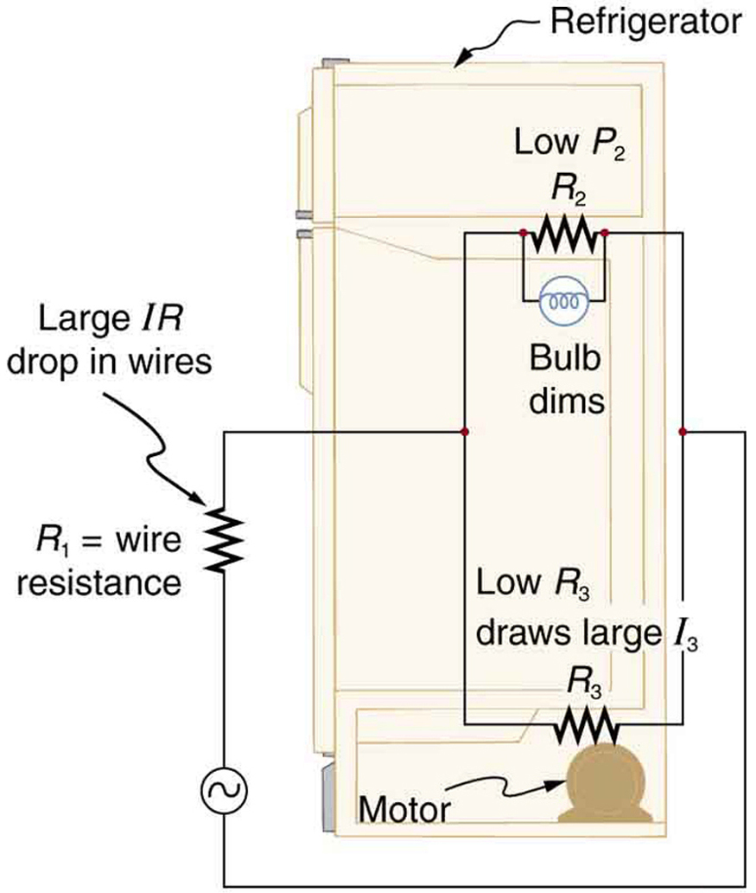
Exercise
Can any arbitrary combination of resistors be broken down into series and parallel combinations? See if you can draw a circuit diagram of resistors that cannot be broken down into combinations of series and parallel.
No, there are many ways to connect resistors that are not combinations of series and parallel, including loops and junctions. In such cases Kirchhoff’s rules, to be introduced in Kirchhoff’s Rules, will allow you to analyze the circuit.
Problem Solving Strategies For Series and Parallel Resistors
📖 OpenStax College Physics, Section 21.1. openstax.org · CC BY 4.0
- Compare and contrast the voltage and the electromagnetic force of an electric power source.
- Describe what happens to the terminal voltage, current, and power delivered to a load as internal resistance of the voltage source increases (due to aging of batteries, for example).
- Explain why it is beneficial to use more than one voltage source connected in parallel.
When you forget to turn off your car lights, they slowly dim as the battery runs down. Why don’t they simply blink off when the battery’s energy is gone? Their gradual dimming implies that battery output voltage decreases as the battery is depleted.
Furthermore, if you connect an excessive number of 12-V lights in parallel to a car battery, they will be dim even when the battery is fresh and even if the wires to the lights have very low resistance. This implies that the battery’s output voltage is reduced by the overload.
The reason for the decrease in output voltage for depleted or overloaded batteries is that all voltage sources have two fundamental parts—a source of electrical energy and aninternal resistance. Let us examine both.
You can think of many different types of voltage sources. Batteries themselves come in many varieties. There are many types of mechanical/electrical generators, driven by many different energy sources, ranging from nuclear to wind. Solar cells create voltages directly from light, while thermoelectric devices create voltage from temperature differences.
A few voltage sources are shown in Figure . All such devices create apotential differenceand can supply current if connected to a resistance. On the small scale, the potential difference creates an electric field that exerts force on charges, causing current. We thus use the nameelectromotive force, abbreviated emf.
Emf is not a force at all; it is a special type of potential difference. To be precise, the electromotive force (emf) is the potential difference of a source when no current is flowing. Units of emf are volts.
Electromotive force is directly related to the source of potential difference, such as the particular combination of chemicals in a battery. However, emf differs from the voltage output of the device when current flows. The voltage across the terminals of a battery, for example, is less than the emf when the battery supplies current, and it declines further as the battery is depleted or loaded down. However, if the device’s output voltage can be measured without drawing current, then output voltage will equal emf (even for a very depleted battery).
As noted before, a 12-V truck battery is physically larger, contains more charge and energy, and can deliver a larger current than a 12-V motorcycle battery. Both are lead-acid batteries with identical emf, but, because of its size, the truck battery has a smaller internal resistance \(r\). Internal resistance is the inherent resistance to the flow of current within the source itself.
Figure is a schematic representation of the two fundamental parts of any voltage source. The emf (represented by a script E in the figure) and internal resistance \(r\) are in series. The smaller the internal resistance for a given emf, the more current and the more power the source can supply.
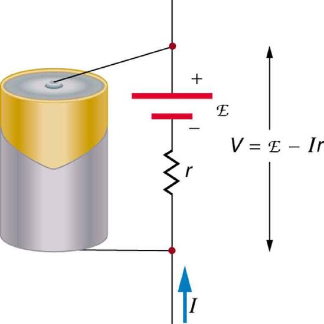
The internal resistance \(r\) can behave in complex ways. As noted, \(r\) increases as a battery is depleted. But internal resistance may also depend on the magnitude and direction of the current through a voltage source, its temperature, and even its history. The internal resistance of rechargeable nickel-cadmium cells, for example, depends on how many times and how deeply they have been depleted.
THINGS GREAT AND SMALL: THE SUBMICROSCOPIC ORIGIN OF BATTERY POTENTIAL
Various types of batteries are available, with emfs determined by the combination of chemicals involved. We can view this as a molecular reaction (what much of chemistry is about) that separates charge.
The lead-acid battery used in cars and other vehicles is one of the most common types. A single cell (one of six) of this battery is seen in Figure . The cathode (positive) terminal of the cell is connected to a lead oxide plate, while the anode (negative) terminal is connected to a lead plate. Both plates are immersed in sulfuric acid, the electrolyte for the system.
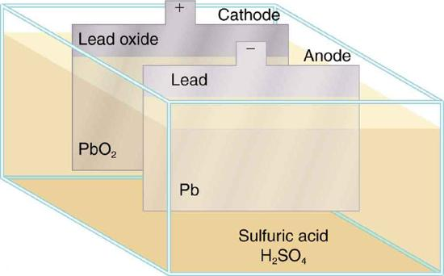
The details of the chemical reaction are left to the reader to pursue in a chemistry text, but their results at the molecular level help explain the potential created by the battery. Figure shows the result of a single chemical reaction. Two electrons are placed on the anode, making it negative, provided that the cathode supplied two electrons. This leaves the cathode positively charged, because it has lost two electrons. In short, a separation of charge has been driven by a chemical reaction.
Note that the reaction will not take place unless there is a complete circuit to allow two electrons to be supplied to the cathode. Under many circumstances, these electrons come from the anode, flow through a resistance, and return to the cathode. Note also that since the chemical reactions involve substances with resistance, it is not possible to create the emf without an internal resistance.
![The diagram shows a simplified view of a battery depicting a rectangular container containing two thin upright metal plates immersed in a liquid. An enlarged view of the metal plates is also shown. One plate has positive charges on it shown as small spheres enclosing a positive sign. The other plate has negative charge on it shown as small spheres enclosing an electron. The electrons are shown to move from the positive plate to the negative plate using arrows through a molecular reaction in the liquid.](images/ch21/fig21-11-the-diagram-shows-a-simplified-view-of-a.jpg)
Why are the chemicals able to produce a unique potential difference? Quantum mechanical descriptions of molecules, which take into account the types of atoms and numbers of electrons in them, are able to predict the energy states they can have and the energies of reactions between them.
In the case of a lead-acid battery, an energy of 2 eV is given to each electron sent to the anode. Voltage is defined as the electrical potential energy divided by charge: \(V = \frac{P_E}{q}\). An electron volt is the energy given to a single electron by a voltage of 1 V. So the voltage here is 2 V, since 2 eV is given to each electron. It is the energy produced in each molecular reaction that produces the voltage. A different reaction produces a different energy and, hence, a different voltage.
The voltage output of a device is measured across its terminals and, thus, is called itsterminal voltage \(V\). Terminal voltage is given by \[V = emf - Ir,\] where \(r\) is the internal resistance and \(I\)is the current flowing at the time of the measurement.
Suppose a load resistance \(R_{load}\) is connected to a voltage source, as in Figure . Since the resistances are in series, the total resistance in the circuit is \(R_{load} + r\). Thus the current is given by Ohm’s law to be \[I = \dfrac{emf}{R_{load} + r}.\]
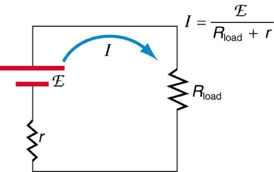
We see from this expression that the smaller the internal resistance \(r\), the greater the current the voltage source supplies to its load \(R_{load}\). As batteries are depleted, \(r\) increases. If \(r\) becomes a significant fraction of the load resistance, then the current is significantly reduced, as the following example illustrates.
A certain battery has a 12.0-V emf and an internal resistance of \(0.100 \, \Omega\). (a) Calculate its terminal voltage when connected to a \(10.0 \, \Omega\) load. (b) What is the terminal voltage when connected to a \(0.500 \, \Omega\) load? (c) What power does the \(0.500 \, \Omega\) load dissipate? (d) If the internal resistance grows to \(0.500 \, \Omega\) find the current, terminal voltage, and power dissipated by a \(0.500 \, \Omega\) load.
The analysis above gave an expression for current when internal resistance is taken into account. Once the current is found, the terminal voltage can be calculated using the equation \(V = emf - Ir\). Once current is found, the power dissipated by a resistor can also be found.
Entering the given values for the emf, load resistance, and internal resistance into the expression above yields \[I = \dfrac{emf}{R_{load} + r} = \dfrac{12.0 \, V}{10.1 \, \Omega} = 1.188 \, A.\]
Enter the known values into the equation \(V = emf - Ir\) to get the terminal voltage: \[V = emf - Ir = 12.0 \, V - (1.188 \, A)(0.100 \, \Omega)\] \[= 11.0 \, V.\]
The terminal voltage here is only slightly lower than the emf, implying that \(10.0 \, \Omega\) is a light load for this particular battery.
Similarly, with \(R_{load} = 0.500 \, \Omega\), the current is \[I = \dfrac{emf}{R_{load} + r} = \dfrac{12.0 \, V}{0.600 \, \Omega} = 20.0 \, A.\]
The terminal voltage is now \[V = emf - Ir = 12.0 \, V - (20.0 \, A)(0.100 \, \Omega)\]\[= 10.0 \, V.\]
This terminal voltage exhibits a more significant reduction compared with emf, implying \(0.500 \, \Omega\) is a heavy load for this battery.
The power dissipated by the \(0.500 \, \Omega\) load can be found using the formula \(P = I^2 R\). Entering the known values gives \[P_{load} = I^2R_{load} = (20.0 \, A)^2(0.500 \, \Omega) = 2.00 \times 10^2 \, W.\]
Note that this power can also be obtained using the expressions \(\frac{V^2}{R}\) or \(IV\), where \(V\) is the terminal voltage (10.0 V in this case).
Here the internal resistance has increased, perhaps due to the depletion of the battery, to the point where it is as great as the load resistance. As before, we first find the current by entering the known values into the expression, yielding \[I = \dfrac{emf}{R_{load} + r} = \dfrac{12.0 \, V}{1.00 \, \Omega} = 12.0 \, A.\]
Now the terminal voltage is \[V = emf - Ir = 12.0 \, V - (12.0 \, A)(0,500 \, \Omega)\]\[= 6.00 \, V,\] and the power dissipated by the load is \[P_{load} = I^2R_{load} = (12.0 \, A)^2(0.500 \, \Omega) = 72.0 \, W.\]
We see that the increased internal resistance has significantly decreased terminal voltage, current, and power delivered to a load.
Battery testers, such as those in Figure , use small load resistors to intentionally draw current to determine whether the terminal voltage drops below an acceptable level. They really test the internal resistance of the battery. If internal resistance is high, the battery is weak, as evidenced by its low terminal voltage.
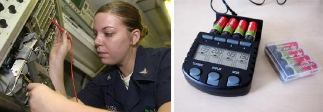
Some batteries can be recharged by passing a current through them in the direction opposite to the current they supply to a resistance. This is done routinely in cars and batteries for small electrical appliances and electronic devices, and is represented pictorially in Figure . The voltage output of the battery charger must be greater than the emf of the battery to reverse current through it. This will cause the terminal voltage of the battery to be greater than the emf, since \(V = emf - Ir\), and \(I\) is now negative.
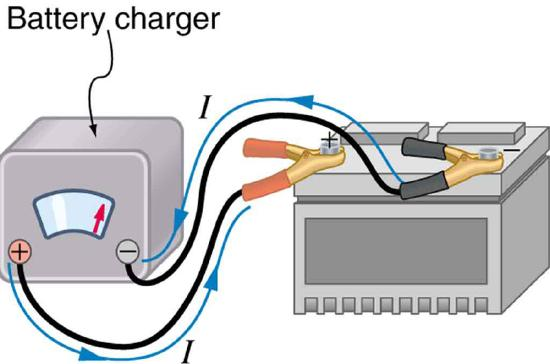
There are two voltage sources when a battery charger is used. Voltage sources connected in series are relatively simple. When voltage sources are in series, their internal resistances add and their emfs add algebraically. (See Figure .) Series connections of voltage sources are common—for example, in flashlights, toys, and other appliances. Usually, the cells are in series in order to produce a larger total emf.
But if the cells oppose one another, such as when one is put into an appliance backward, the total emf is less, since it is the algebraic sum of the individual emfs.
A battery is a multiple connection of voltaic cells, as shown in Figure . The disadvantage of series connections of cells is that their internal resistances add. One of the authors once owned a 1957 MGA that had two 6-V batteries in series, rather than a single 12-V battery. This arrangement produced a large internal resistance that caused him many problems in starting the engine.
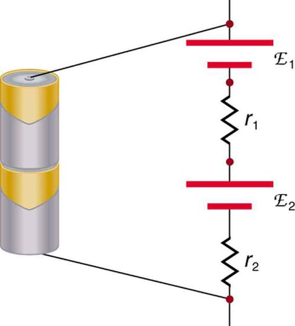
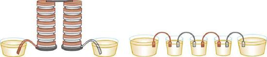
If theseriesconnection of two voltage sources is made into a complete circuit with the emfs in opposition, then a current of magnitude \(I = \frac{(emf_1 - emf_2)}{r_1 + r_2}\) flows. See Figure , for example, which shows a circuit exactly analogous to the battery charger discussed above. If two voltage sources in series with emfs in the same sense are connected to a load \(R_{load}\), as in Figure , then \(I = \frac{(emf_1 + emf_2)}{r_1 + r_2 + R_{load}}\) flows.
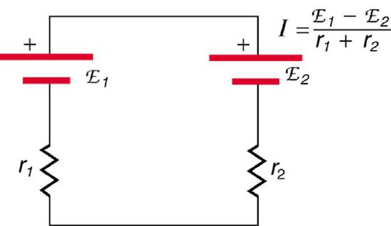
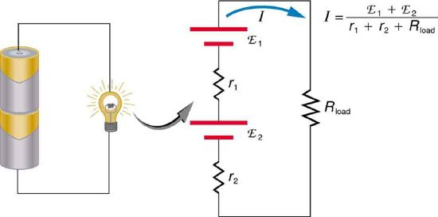
TAKE-HOME EXPERIMENT: FLASHLIGHT BATTERIES
Find a flashlight that uses several batteries and find new and old batteries. Based on the discussions in this module, predict the brightness of the flashlight when different combinations of batteries are used. Do your predictions match what you observe? Now place new batteries in the flashlight and leave the flashlight switched on for several hours. Is the flashlight still quite bright? Do the same with the old batteries. Is the flashlight as bright when left on for the same length of time with old and new batteries? What does this say for the case when you are limited in the number of available new batteries?
Figure shows two voltage sources with identical emfs in parallel and connected to a load resistance. In this simple case, the total emf is the same as the individual emfs. But the total internal resistance is reduced, since the internal resistances are in parallel. The parallel connection thus can produce a larger current.
Here \(I = \frac{emf}{(r_{tot} + R_{load})}\) flows through the load, and \(r_{tot}\) is less than those of the individual batteries. For example, some diesel-powered cars use two 12-V batteries in parallel; they produce a total emf of 12 V but can deliver the larger current needed to start a diesel engine.
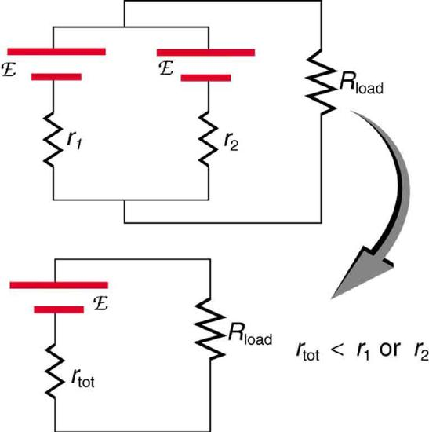
A number of animals both produce and detect electrical signals. Fish, sharks, platypuses, and echidnas (spiny anteaters) all detect electric fields generated by nerve activity in prey. Electric eels produce their own emf through biological cells (electric organs) called electroplaques, which are arranged in both series and parallel as a set of batteries.
Electroplaques are flat, disk-like cells; those of the electric eel have a voltage of 0.15 V across each one. These cells are usually located toward the head or tail of the animal, although in the case of the electric eel, they are found along the entire body. The electroplaques in the South American eel are arranged in 140 rows, with each row stretching horizontally along the body and containing 5,000 electroplaques. This can yield an emf of approximately 600 V, and a current of 1 A—deadly.
The mechanism for detection of external electric fields is similar to that for producing nerve signals in the cell through depolarization and repolarization—the movement of ions across the cell membrane. Within the fish, weak electric fields in the water produce a current in a gel-filled canal that runs from the skin to sensing cells, producing a nerve signal. The Australian platypus, one of the very few mammals that lay eggs, can detect fields of 30 \(\frac{mV}{m}\), while sharks have been found to be able to sense a field in their snouts as small as 100 \(\frac{mV}{m}\) (Figure . Electric eels use their own electric fields produced by the electroplaques to stun their prey or enemies.
Another example dealing with multiple voltage sources is that of combinations of solar cells—wired in both series and parallel combinations to yield a desired voltage and current. Photovoltaic generation (PV), the conversion of sunlight directly into electricity, is based upon the photoelectric effect, in which photons hitting the surface of a solar cell create an electric current in the cell.
Most solar cells are made from pure silicon—either as single-crystal silicon, or as a thin film of silicon deposited upon a glass or metal backing. Most single cells have a voltage output of about 0.5 V, while the current output is a function of the amount of sunlight upon the cell (the incident solar radiation—the insolation). Under bright noon sunlight, a current of about \(100 \, mA/cm^2\) of cell surface area is produced by typical single-crystal cells.
Individual solar cells are connected electrically in modules to meet electrical-energy needs. They can be wired together in series or in parallel—connected like the batteries discussed earlier. A solar-cell array or module usually consists of between 36 and 72 cells, with a power output of 50 W to 140 W.
The output of the solar cells is direct current. For most uses in a home, AC is required, so a device called an inverter must be used to convert the DC to AC. Any extra output can then be passed on to the outside electrical grid for sale to the utility.
TAKE-HOME EXPERIMENT: VIRTUAL SOLAR CELLS
One can assemble a “virtual” solar cell array by using playing cards, or business or index cards, to represent a solar cell. Combinations of these cards in series and/or parallel can model the required array output. Assume each card has an output of 0.5 V and a current (under bright light) of 2 A. Using your cards, how would you arrange them to produce an output of 6 A at 3 V (18 W)?
Suppose you were told that you needed only 18 W (but no required voltage). Would you need more cards to make this arrangement?
📖 OpenStax College Physics, Section 21.2. openstax.org · CC BY 4.0
- Analyze a complex circuit using Kirchhoff’s rules, using the conventions for determining the correct signs of various terms.
Many complex circuits, such as the one in Figure , cannot be analyzed with the series-parallel techniques developed inResistors in Series and ParallelandElectromotive Force: Terminal Voltage. There are, however, two circuit analysis rules that can be used to analyze any circuit, simple or complex. These rules are special cases of the laws of conservation of charge and conservation of energy. The rules are known asKirchhoff’s rules, after their inventor Gustav Kirchhoff (1824–1887).
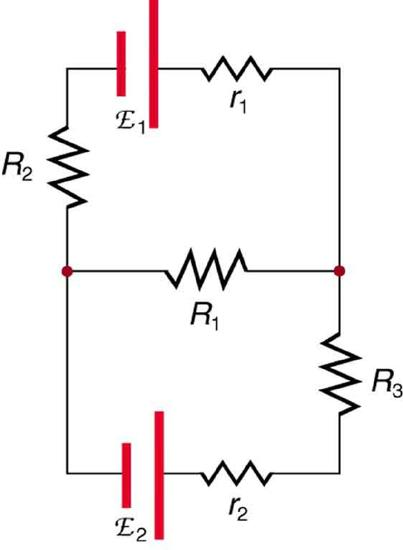
Definition: Kirchhoff's Rules
Explanations of the two rules will now be given, followed by problem-solving hints for applying Kirchhoff’s rules, and a worked example that uses them.
Kirchhoff’s first rule (thejunction rule) is an application of the conservation of charge to a junction; it is illustrated in Figure . Current is the flow of charge, and charge is conserved; thus, whatever charge flows into the junction must flow out. Kirchhoff’s first rule requires that \(I_1 = I_2 + I_3\) (Figure . Equations like this can and will be used to analyze circuits and to solve circuit problems.
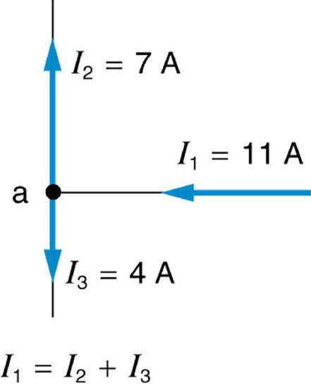
Kirchhoff’s second rule (theloop rule) is an application of conservation of energy. The loop rule is stated in terms of potential, rather than potential energy, but the two are related since \(PE_{elec} = qV\). Recall thatemfis the potential difference of a source when no current is flowing. In a closed loop, whatever energy is supplied by emf must be transferred into other forms by devices in the loop, since there are no other ways in which energy can be transferred into or out of the circuit. Figure illustrates the changes in potential in a simple series circuit loop.
Kirchhoff’s second rule requires \(emf - Ir - IR_1 - IR_2 = 0\). Rearranged, this is \(emf = Ir + IR_1 + IR_2\), which means the emf equals the sum of the \(IR\) (voltage) drops in the loop.
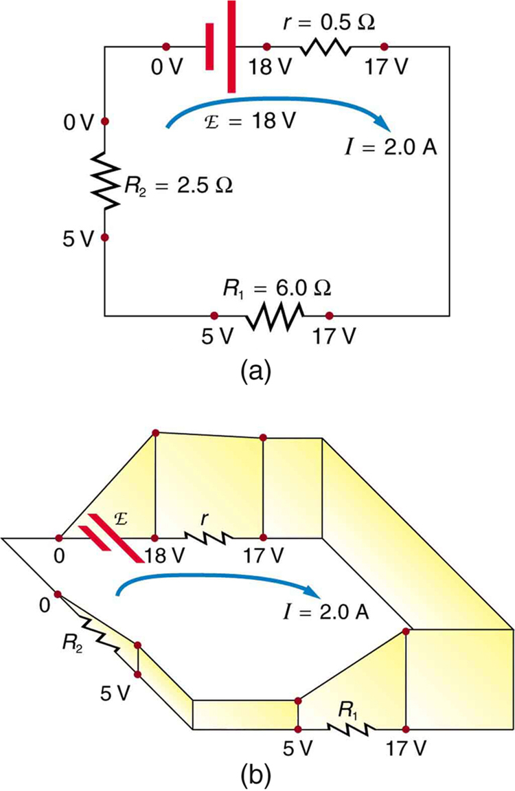
By applying Kirchhoff’s rules, we generate equations that allow us to find the unknowns in circuits. The unknowns may be currents, emfs, or resistances. Each time a rule is applied, an equation is produced. If there are as many independent equations as unknowns, then the problem can be solved. There are two decisions you must make when applying Kirchhoff’s rules. These decisions determine the signs of various quantities in the equations you obtain from applying the rules.
Figure and the following points will help you get the plus or minus signs right when applying the loop rule. Note that the resistors and emfs are traversed by going from a to b. In many circuits, it will be necessary to construct more than one loop. In traversing each loop, one needs to be consistent for the sign of the change in potential (Example .
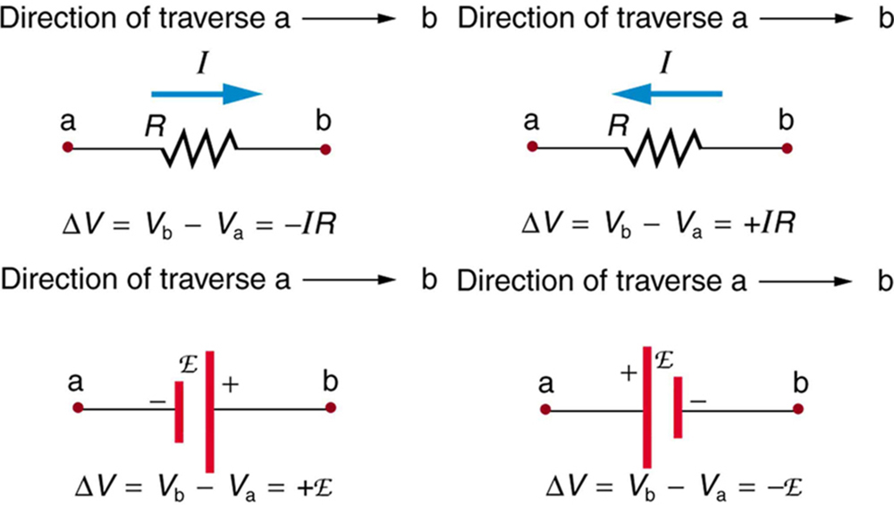
Find the currents flowing in the circuit in Figure .
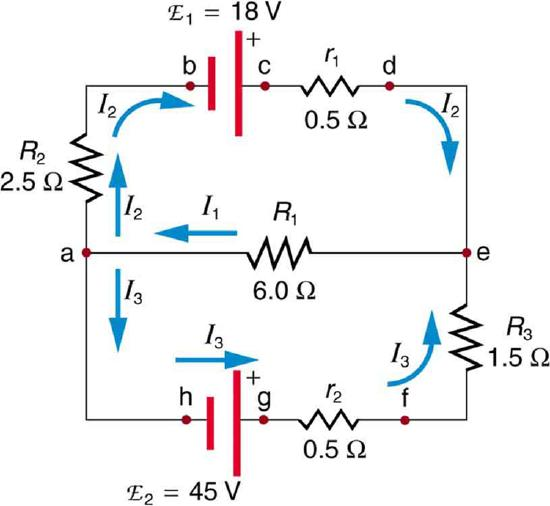
This circuit is sufficiently complex that the currents cannot be found using Ohm’s law and the series-parallel techniques—it is necessary to use Kirchhoff’s rules. Currents have been labeled \(I_1, \, I_2,\) and \(I_3\)
in the figure and assumptions have been made about their directions. Locations on the diagram have been labeled with letters a through h. In the solution we will apply the junction and loop rules, seeking three independent equations to allow us to solve for the three unknown currents.
We begin by applying Kirchhoff’s first or junction rule at point a. This gives
since \(I_1\) flows into the junction, while \(I\) and \(I_3\) flow out. Applying the junction rule at e produces exactly the same equation, so that no new information is obtained. This is a single equation with three unknowns—three independent equations are needed, and so the loop rule must be applied.
Now we consider the loop abcdea. Going from a to b, we traverse \(R_2\) in the same (assumed) direction of the current \(I_2\), and so the change in potential is \(-I_2R_2\). Then going from b to c, we go from - to +, so that the change in potential is \(+emf_1\). Traversing the internal resistance \(r_1\) from c to d gives \(-I_2r_1\). Completing the loop by going from d to a again traverses a resistor in the same direction as its current, giving a change in potential of \(-I_1R_1\).
The loop rule states that the changes in potential sum to zero. Thus,
Note that the signs are reversed compared with the other loop, because elements are traversed in the opposite direction. With values entered, this becomes \[+6I_1 + 2I_3 -45 = 0.\] These three equations are sufficient to solve for the three unknown currents. First, solve the second equation for \(I_2\).
Now solve the third equation for \(I_3\):
Substituting these two new equations into the first one allows us to find a value for
Combining terms gives
Substituting this value for \(I\) back into the fourth equation gives
The minus sign means \(I_2\) flows in the direction opposite to that assumed inFigure.
Finally, substituting the value for \(I_1\) into the fifth equation gives
Just as a check, we note that indeed \(I_1 = I_2 + I_3\). The results could also have been checked by entering all of the values into the equation for the abcdefgha loop.
Problem-Solving Strategies for Kirchhoff’s Rules
The material in this section is correct in theory. We should be able to verify it by making measurements of current and voltage. In fact, some of the devices used to make such measurements are straightforward applications of the principles covered so far and are explored in the next modules. As we shall see, a very basic, even profound, fact results—making a measurement alters the quantity being measured.
Exercise
Can Kirchhoff’s rules be applied to simple series and parallel circuits or are they restricted for use in more complicated circuits that are not combinations of series and parallel?
Kirchhoff's rules can be applied to any circuit since they are applications to circuits of two conservation laws. Conservation laws are the most broadly applicable principles in physics. It is usually mathematically simpler to use the rules for series and parallel in simpler circuits so we emphasize Kirchhoff’s rules for use in more complicated situations. But the rules for series and parallel can be derived from Kirchhoff’s rules. Moreover, Kirchhoff’s rules can be expanded to devices other than resistors and emfs, such as capacitors, and are one of the basic analysis devices in circuit analysis.
📖 OpenStax College Physics, Section 21.3. openstax.org · CC BY 4.0
- Explain why a voltmeter must be connected in parallel with the circuit.
- Draw a diagram showing an ammeter correctly connected in a circuit.
- Describe how a galvanometer can be used as either a voltmeter or an ammeter.
- Find the resistance that must be placed in series with a galvanometer to allow it to be used as a voltmeter with a given reading.
- Explain why measuring the voltage or current in a circuit can never be exact.
Voltmetersmeasure voltage, whereasammetersmeasure current. Some of the meters in automobile dashboards, digital cameras, cell phones, and tuner-amplifiers are voltmeters or ammeters. (SeeFigure.) The internal construction of the simplest of these meters and how they are connected to the system they monitor give further insight into applications of series and parallel connections.
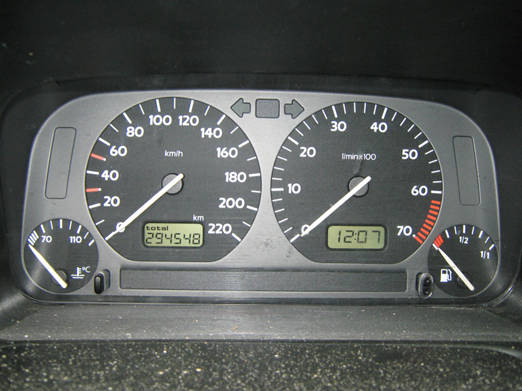
Voltmeters are connected in parallel with whatever device’s voltage is to be measured. A parallel connection is used because objects in parallel experience the same potential difference. (SeeFigure, where the voltmeter is represented by the symbol V.)
Ammeters are connected in series with whatever device’s current is to be measured. A series connection is used because objects in series have the same current passing through them. (SeeFigure, where the ammeter is represented by the symbol A.)
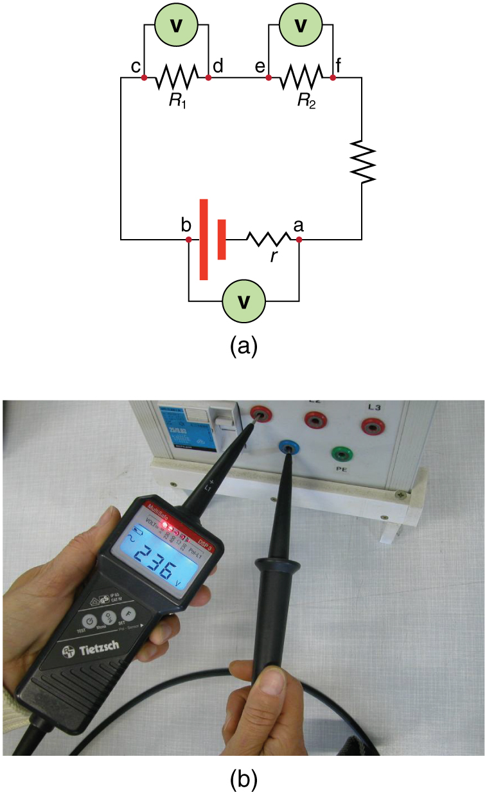
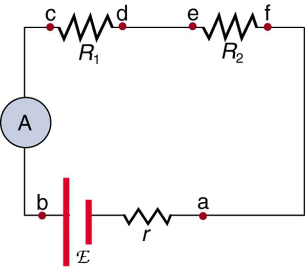
Analog metershave a needle that swivels to point at numbers on a scale, as opposed todigital meters, which have numerical readouts similar to a hand-held calculator. The heart of most analog meters is a device called agalvanometer, denoted by G. Current flow through a galvanometer, \(I_G\), produces a proportional needle deflection. (This deflection is due to the force of a magnetic field upon a current-carrying wire.)
The two crucial characteristics of a given galvanometer are its resistance and current sensitivity.Current sensitivityis the current that gives afull-scale deflectionof the galvanometer’s needle, the maximum current that the instrument can measure. For example, a galvanometer with a current sensitivity of \(50 \mu A\) has a maximum deflection of its needle when \(50 \, \mu A\) flows through it, reads half-scale when \(25 \, \mu A\) flows through it, and so on.
If such a galvanometer has a \(25 \, \Omega\) resistance, then a voltage of only \(V = IR = (50 \, \mu A)(25 \, \Omega) = 1.25 \, mV\) produces a full-scale reading. By connecting resistors to this galvanometer in different ways, you can use it as either a voltmeter or ammeter that can measure a broad range of voltages or currents.
Figureshows how a galvanometer can be used as a voltmeter by connecting it in series with a large resistance, \(R\). The value of the resistance \(R\) is determined by the maximum voltage to be measured. Suppose you want 10 V to produce a full-scale deflection of a voltmeter containing a \(25 \, \Omega\) galvanometer with a \(50-\mu A\) sensitivity. Then 10 V applied to the meter must produce a current of \(50 \, \mu A\). The total resistance must be \[R_{tot} = R + r = \dfrac{V}{I} = \dfrac{10 \, V}{50 \, \mu A} = 200 \, k\Omega, \, or\]\[R = T_{tot} - r = 200 \, k\Omega - 25 \, \Omega \approx 200 \, k\Omega.\]
(\(R\) is so large that the galvanometer resistance, \(r\), is nearly negligible.) Note that 5 V applied to this voltmeter produces a half-scale deflection by producing a \(25 \, \mu A\) current through the meter, and so the voltmeter’s reading is proportional to voltage as desired.
This voltmeter would not be useful for voltages less than about half a volt, because the meter deflection would be small and difficult to read accurately. For other voltage ranges, other resistances are placed in series with the galvanometer. Many meters have a choice of scales. That choice involves switching an appropriate resistance into series with the galvanometer.
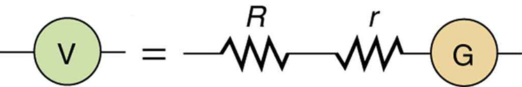
The same galvanometer can also be made into an ammeter by placing it in parallel with a small resistance \(R\), often called theshunt resistance, as shown inFigure. Since the shunt resistance is small, most of the current passes through it, allowing an ammeter to measure currents much greater than those producing a full-scale deflection of the galvanometer.
Suppose, for example, an ammeter is needed that gives a full-scale deflection for 1.0 A, and contains the same \(25-\Omega\) galvanometer with its \(50-\mu A\) sensitivity. Since \(R\) and \(r\) are in parallel, the voltage across them is the same.
These \(IR\) drops are \(IR = I_Cr\) so that \(IR = \frac{I_G}{I} = \frac{R}{r}\). Solving for \(R\), and noting that \(I_G\) is \(50 \, \mu A\) and \(I\) is 0.999950 A, we have \[R = r\dfrac{I_G}{I} = (25 \, \Omega) \dfrac{50 \, \mu A}{0.999950 \, A} = 1.25 \times 10^{-3} \, \Omega.\]
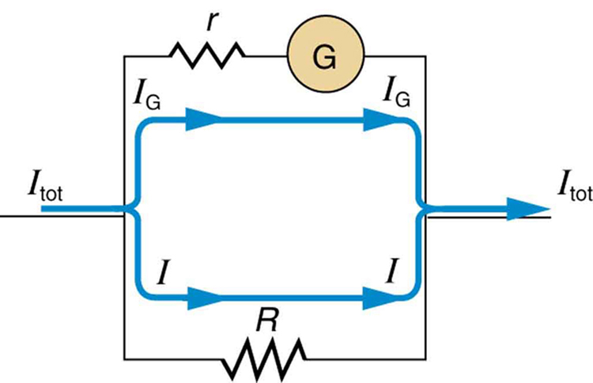
When you use a voltmeter or ammeter, you are connecting another resistor to an existing circuit and, thus, altering the circuit. Ideally, voltmeters and ammeters do not appreciably affect the circuit, but it is instructive to examine the circumstances under which they do or do not interfere.
First, consider the voltmeter, which is always placed in parallel with the device being measured. Very little current flows through the voltmeter if its resistance is a few orders of magnitude greater than the device, and so the circuit is not appreciably affected. (SeeFigure(a).) (A large resistance in parallel with a small one has a combined resistance essentially equal to the small one.) If, however, the voltmeter’s resistance is comparable to that of the device being measured, then the two in parallel have a smaller resistance, appreciably affecting the circuit. (SeeFigure(b).) The voltage across the device is not the same as when the voltmeter is out of the circuit.
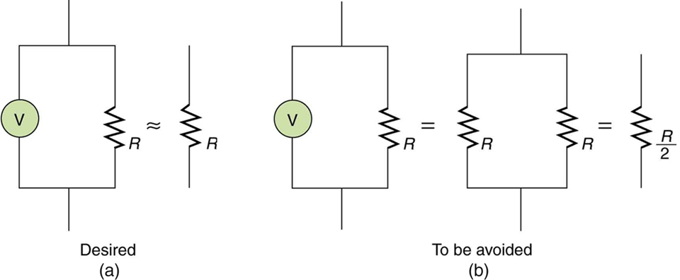
An ammeter is placed in series in the branch of the circuit being measured, so that its resistance adds to that branch. Normally, the ammeter’s resistance is very small compared with the resistances of the devices in the circuit, and so the extra resistance is negligible. (SeeFigure(a).) However, if very small load resistances are involved, or if the ammeter is not as low in resistance as it should be, then the total series resistance is significantly greater, and the current in the branch being measured is reduced. (SeeFigure(b).)
A practical problem can occur if the ammeter is connected incorrectly. If it was put in parallel with the resistor to measure the current in it, you could possibly damage the meter; the low resistance of the ammeter would allow most of the current in the circuit to go through the galvanometer, and this current would be larger since the effective resistance is smaller.
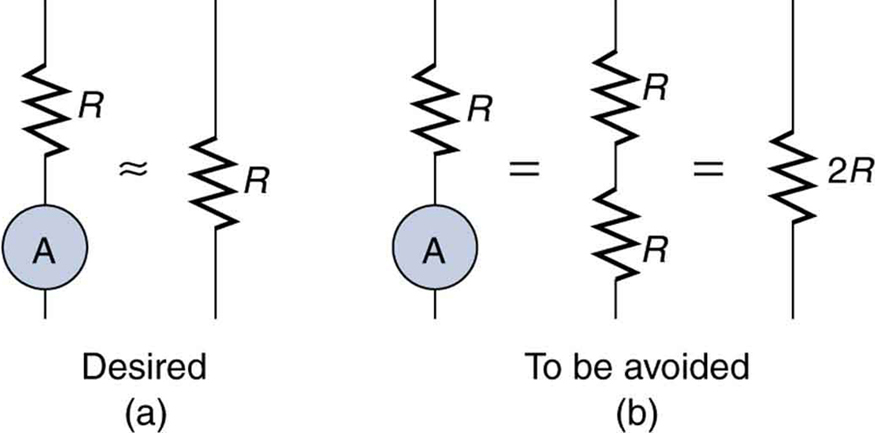
One solution to the problem of voltmeters and ammeters interfering with the circuits being measured is to use galvanometers with greater sensitivity. This allows construction of voltmeters with greater resistance and ammeters with smaller resistance than when less sensitive galvanometers are used.
There are practical limits to galvanometer sensitivity, but it is possible to get analog meters that make measurements accurate to a few percent. Note that the inaccuracy comes from altering the circuit, not from a fault in the meter.
CONNECTIONS: LIMITS TO KNOWLEDGE
Making a measurement alters the system being measured in a manner that produces uncertainty in the measurement. For macroscopic systems, such as the circuits discussed in this module, the alteration can usually be made negligibly small, but it cannot be eliminated entirely. For submicroscopic systems, such as atoms, nuclei, and smaller particles, measurement alters the system in a manner that cannot be made arbitrarily small. This actually limits knowledge of the system—even limiting what nature can know about itself. We shall see profound implications of this when the Heisenberg uncertainty principle is discussed in the modules on quantum mechanics.
There is another measurement technique based on drawing no current at all and, hence, not altering the circuit at all. These are called null measurements and are the topic ofNull Measurements. Digital meters that employ solid-state electronics and null measurements can attain accuracies of one part in \(10^6\).
Exercise
Digital meters are able to detect smaller currents than analog meters employing galvanometers. How does this explain their ability to measure voltage and current more accurately than analog meters?
Since digital meters require less current than analog meters, they alter the circuit less than analog meters. Their resistance as a voltmeter can be far greater than an analog meter, and their resistance as an ammeter can be far less than an analog meter. ConsultFigureandFigureand their discussion in the text.
PHET EXPLORATIONS: CIRCUIT CONSTRUCTION KIT (DC ONLY), VIRTUAL LAB
Stimulate a neuron and monitor what happens. Pause, rewind, and move forward in time in order to observe the ions as they move across the neuron membrane.

📖 OpenStax College Physics, Section 21.4. openstax.org · CC BY 4.0
- Explain why a null measurement device is more accurate than a standard voltmeter or ammeter.
- Demonstrate how a Wheatstone bridge can be used to accurately calculate the resistance in a circuit.
Standard measurements of voltage and current alter the circuit being measured, introducing uncertainties in the measurements. Voltmeters draw some extra current, whereas ammeters reduce current flow.Null measurementsbalance voltages so that there is no current flowing through the measuring device and, therefore, no alteration of the circuit being measured.
Null measurements are generally more accurate but are also more complex than the use of standard voltmeters and ammeters, and they still have limits to their precision. In this module, we shall consider a few specific types of null measurements, because they are common and interesting, and they further illuminate principles of electric circuits.
Suppose you wish to measure the emf of a battery. Consider what happens if you connect the battery directly to a standard voltmeter as shown inFigure. (Once we note the problems with this measurement, we will examine a null measurement that improves accuracy.) As discussed before, the actual quantity measured is the terminal voltage \(V\), which is related to the emf of the battery by \(V = emf - Ir\), where \(I\) is the current that flows and \(r\) is the internal resistance of the battery.
The emf could be accurately calculated if \(r\) were very accurately known, but it is usually not. If the current \(I\) could be made zero, then \(V = emf\), and so emf could be directly measured. However, standard voltmeters need a current to operate; thus, another technique is needed.
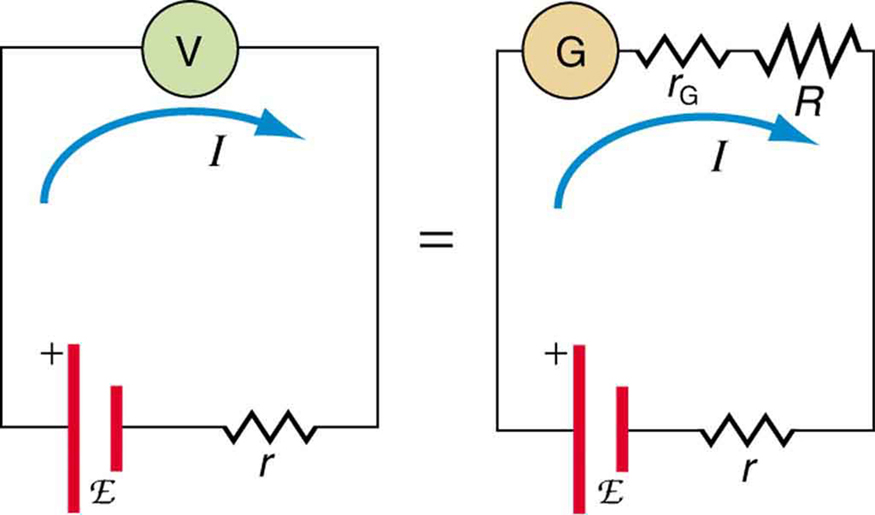
Apotentiometeris a null measurement device for measuring potentials (voltages). (SeeFigure.) A voltage source is connected to a resistor \(r\) say, a long wire, and passes a constant current through it. There is a steady drop in potential (an \(IR\) drop) along the wire, so that a variable potential can be obtained by making contact at varying locations along the wire.
Figure(b) shows an unknown \(emf_x\) (represented by script \(E_x\) in the figure) connected in series with a galvanometer. Note that \(emf_x\) opposes the other voltage source. The location of the contact point (see the arrow on the drawing) is adjusted until the galvanometer reads zero. When the galvanometer reads zero, \(emf_x = IR_x\) where \(R_x\) is the resistance of the section of wire up to the contact point. Since no current flows through the galvanometer, none flows through the unknown emf, and so \(emf_x\) is directly sensed.
Now, a very precisely known standard \(emf_s\) is substituted for \(emf_x\), and the contact point is adjusted until the galvanometer again reads zero, so that \(emf_s = IR_s\). In both cases, no current passes through the galvanometer, and so the current \(I\) through the long wire is the same. Upon taking the ratio \(\frac{emf_x}{emf_s}\), \(I\) cancels, giving \[\dfrac{emf_x}{emf_s} = \dfrac{IR_x}{IR_s} = \dfrac{R_x}{R_s}.\]
Solving for \(emf_x\) gives \[emf_x = emf_s \dfrac{R_x}{R_s}.\]
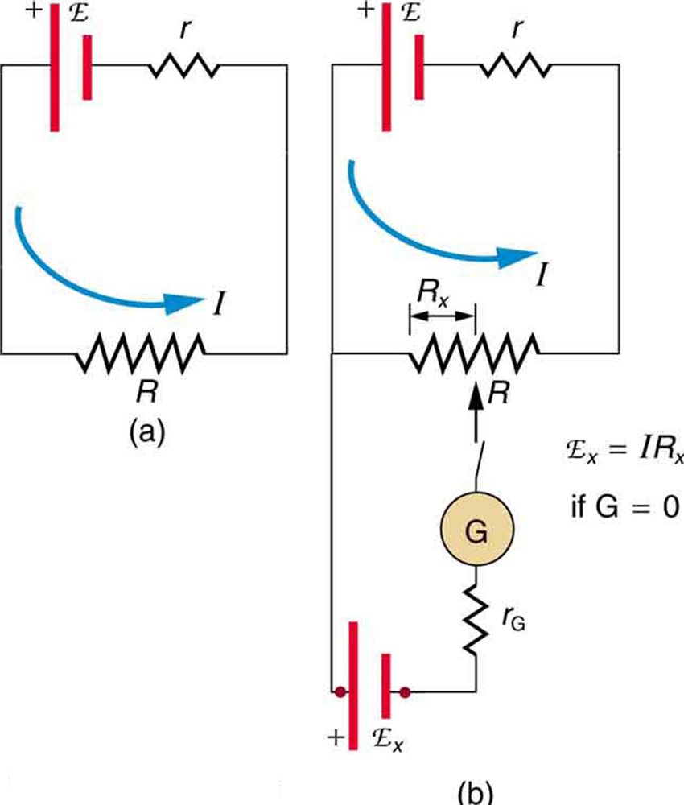
Because a long uniform wire is used for \(R\), the ratio of resistances \(R_x/R_s\) is the same as the ratio of the lengths of wire that zero the galvanometer for each emf. The three quantities on the right-hand side of the equation are now known or measured, and \(emf_x\) can be calculated. The uncertainty in this calculation can be considerably smaller than when using a voltmeter directly, but it is not zero. There is always some uncertainty in the ratio of resistances \(R_x/R_s\) and in the standard \(emf_s\). Furthermore, it is not possible to tell when the galvanometer reads exactly zero, which introduces error into both \(R_x\) and \(R_s\), and may also affect the current \(I\).
There is a variety of so-calledohmmetersthat purport to measure resistance. What the most common ohmmeters actually do is to apply a voltage to a resistance, measure the current, and calculate the resistance using Ohm’s law. Their readout is this calculated resistance. Two configurations for ohmmeters using standard voltmeters and ammeters are shown inFigure. Such configurations are limited in accuracy, because the meters alter both the voltage applied to the resistor and the current that flows through it.
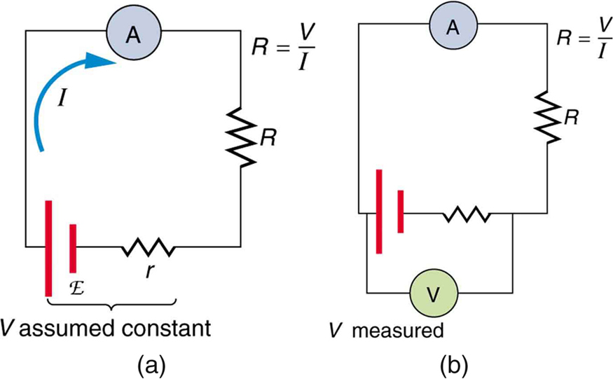
TheWheatstone bridgeis a null measurement device for calculating resistance by balancing potential drops in a circuit. (SeeFigure.) The device is called a bridge because the galvanometer forms a bridge between two branches. A variety ofbridge devicesare used to make null measurements in circuits.
Resistors \(R_1\) and \(R_2\) are precisely known, while the arrow through \(R_3\) indicates that it is a variable resistance. The value of \(R_3\) can be precisely read. With the unknown resistance \(R_x\) in the circuit, \(R_3\) is adjusted until the galvanometer reads zero. The potential difference between points b and d is then zero, meaning that b and d are at the same potential. With no current running through the galvanometer, it has no effect on the rest of the circuit. So the branches abc and adc are in parallel, and each branch has the full voltage of the source. That is, the \(IR\) drops along abc and adc are the same. Since b and d are at the same potential, the \(IR\) drop along ad must equal the \(IR\) drop along ab. Thus, \[I_1R_1 = I_2R_2.\]
Again, since b and d are at the same potential, the \(IR\) drop along dc must equal the \(IR\) drop along bc. Thus, \[I_1R_2 = I_2R_x.\] Taking the ratio of these last two expressions gives \[\dfrac{I_1R_1}{I_1R_2} = \dfrac{I_2R_3}{I_2R_x}.\] Canceling the currents and solving for Rxyields \[R_x = R_3\dfrac{R_2}{R_1}.\]
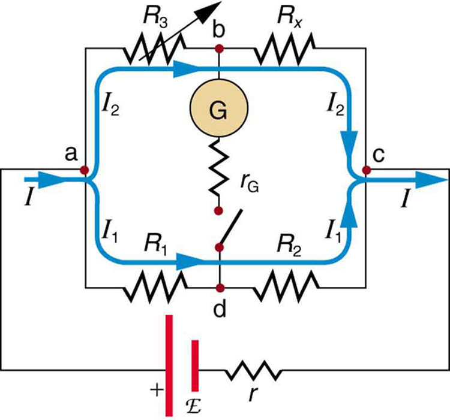
This equation is used to calculate the unknown resistance when current through the galvanometer is zero. This method can be very accurate (often to four significant digits), but it is limited by two factors. First, it is not possible to get the current through the galvanometer to be exactly zero. Second, there are always uncertainties in \(R_1\), \(R_2\) and \(R_3\), which contribute to the uncertainty in \(R_x\).
Exercise
Identify other factors that might limit the accuracy of null measurements. Would the use of a digital device that is more sensitive than a galvanometer improve the accuracy of null measurements?
One factor would be resistance in the wires and connections in a null measurement. These are impossible to make zero, and they can change over time. Another factor would be temperature variations in resistance, which can be reduced but not completely eliminated by choice of material. Digital devices sensitive to smaller currents than analog devices do improve the accuracy of null measurements because they allow you to get the current closer to zero.
📖 OpenStax College Physics, Section 21.5. openstax.org · CC BY 4.0
- Explain the importance of the time constant,τ, and calculate the time constant for a given resistance and capacitance.
- Explain why batteries in a flashlight gradually lose power and the light dims over time.
- Describe what happens to a graph of the voltage across a capacitor over time as it charges.
- Explain how a timing circuit works and list some applications.
- Calculate the necessary speed of a strobe flash needed to “stop” the movement of an object over a particular length.
When you use a flash camera, it takes a few seconds to charge the capacitor that powers the flash. The light flash discharges the capacitor in a tiny fraction of a second. Why does charging take longer than discharging? This question and a number of other phenomena that involve charging and discharging capacitors are discussed in this module.
An \(RC\)circuitis one containing aresistor \(R\) and capacitor \(C\). The capacitor is an electrical component that stores electric charge.
Figureshows a simple \(RC\) circuit that employs a DC (direct current) voltage source. The capacitor is initially uncharged. As soon as the switch is closed, current flows to and from the initially uncharged capacitor. As charge increases on the capacitor plates, there is increasing opposition to the flow of charge by the repulsion of like charges on each plate.
In terms of voltage, this is because voltage across the capacitor is given by \(V_c = Q/C\), where \(Q\) is the amount of charge stored on each plate and \(C\) is thecapacitance. This voltage opposes the battery, growing from zero to the maximum emf when fully charged. The current thus decreases from its initial value of \(I_9 = \frac{emf}{R}\) to zero as the voltage on the capacitor reaches the same value as the emf. When there is no current, there is no \(IR\) drop, and so the voltage on the capacitor must then equal the emf of the voltage source. This can also be explained with Kirchhoff’s second rule (the loop rule), discussed inKirchhoff’s Rules, which says that the algebraic sum of changes in potential around any closed loop must be zero.
The initial current is \(I_0 = \frac{emf}{R}\), because all of the \(IR\) drop is in the resistance. Therefore, the smaller the resistance, the faster a given capacitor will be charged. Note that the internal resistance of the voltage source is included in \(R\), as are the resistances of the capacitor and the connecting wires. In the flash camera scenario above, when the batteries powering the camera begin to wear out, their internal resistance rises, reducing the current and lengthening the time it takes to get ready for the next flash.
![Part a shows a circuit with a cell of e m f script E connected in series with a resistor R, a capacitor C, and a switch to close the circuit. The current is shown flowing in a clockwise direction. The capacitor plates are shown to have a charge positive q and negative q respectively. Part b shows a graph of the variation of voltage of the capacitor with time. The voltage is plotted along the vertical axis and the time is along the horizontal axis. The graph shows a smooth upward rising curve which approaches a maximum and flattens out at maximum voltage equal to e m f script E over time.](images/ch21/fig21-38-part-a-shows-a-circuit-with-a-cell-of-e-.jpg)
Voltage on the capacitor is initially zero and rises rapidly at first, since the initial current is a maximum.Figure(b) shows a graph of capacitor voltage versus time (\(t\)) starting when the switch is closed at \(t - 0\). The voltage approaches emf asymptotically, since the closer it gets to emf the less current flows. The equation for voltage versus time when charging a capacitor \(C\) through a resistor \(R\), derived using calculus, is \[V = emf(1 - e^{-t/RC})(charging),\] where \(V\) is the voltage across the capacitor, emf is equal to the emf of the DC voltage source, and the exponential e = 2.718 … is the base of the natural logarithm. Note that the units of \(RC\) are seconds. We define \[\tau = RC,\] where \(\tau\) (the Greek letter tau) is called the time constant for an \(RC\) circuit. As noted before, a small resistance \(R\) allows the capacitor to charge faster. This is reasonable, since a larger current flows through a smaller resistance. It is also reasonable that the smaller the capacitor \(C\), the less time needed to charge it. Both factors are contained in \(\tau = RC\).
More quantitatively, consider what happens when \(t = \tau = RC\). Then the voltage on the capacitor is \[V = emf(1 - e^{-1}) = emf(1 - 0.368) = 0.632 \cdot emf.\]
This means that in the time \(\tau = RC\), the voltage rises to 0.632 of its final value. The voltage will rise 0.632 of the remainder in the next time \(\tau\) It is a characteristic of the exponential function that the final value is never reached, but 0.632 of the remainder to that value is achieved in every time \(\tau\). In just a few multiples of the time constant \(\tau\), then, the final value is very nearly achieved, as the graph inFigure(b) illustrates.
Discharging a capacitor through a resistor proceeds in a similar fashion, asFigureillustrates. Initially, the current is \(I_9 - \frac{V_0}{R}\), driven by the initial voltage \(V_0\) on the capacitor. As the voltage decreases, the current and hence the rate of discharge decreases, implying another exponential formula for \(V\). Using calculus, the voltage \(V\) on a capacitor \(C\) being discharged through a resistor \(R\) is found to be \[V = V_0 e^{-t/RC} (discharging).\]
![Part a shows a circuit with a capacitor C connected in series with a resistor R and a switch to close the circuit. The current is shown flowing in a counterclockwise direction. The capacitor plates are shown to have a charge positive q and negative q respectively. Part b shows a graph of the variation of voltage across the capacitor with time. The voltage is plotted along the vertical axis and the time is along the horizontal axis. The graph shows a smooth downward falling curve which approaches a minimum and flattens out close to zero over time.](images/ch21/fig21-39-part-a-shows-a-circuit-with-a-capacitor-.jpg)
The graph inFigure(b) is an example of this exponential decay. Again, the time constant is \(\tau = RC\). A small resistance \(R\) allows the capacitor to discharge in a small time, since the current is larger. Similarly, a small capacitance requires less time to discharge, since less charge is stored. In the first time interval \(\tau = RC\) after the switch is closed, the voltage falls to 0.368 of its initial value, since \(V = V_0 \cdot e^{-1} = 0.368 V_0\).
During each successive time \(\tau\), the voltage falls to 0.368 of its preceding value. In a few multiples of \(\tau\), the voltage becomes very close to zero, as indicated by the graph inFigure(b).
Now we can explain why the flash camera in our scenario takes so much longer to charge than discharge; the resistance while charging is significantly greater than while discharging. The internal resistance of the battery accounts for most of the resistance while charging. As the battery ages, the increasing internal resistance makes the charging process even slower. (You may have noticed this.)
The flash discharge is through a low-resistance ionized gas in the flash tube and proceeds very rapidly. Flash photographs, such as inFigure, can capture a brief instant of a rapid motion because the flash can be less than a microsecond in duration. Such flashes can be made extremely intense.
During World War II, nighttime reconnaissance photographs were made from the air with a single flash illuminating more than a square kilometer of enemy territory. The brevity of the flash eliminated blurring due to the surveillance aircraft’s motion. Today, an important use of intense flash lamps is to pump energy into a laser. The short intense flash can rapidly energize a laser and allow it to reemit the energy in another form.
High-speed flash photography was pioneered by Doc Edgerton in the 1930s, while he was a professor of electrical engineering at MIT. You might have seen examples of his work in the amazing shots of hummingbirds in motion, a drop of milk splattering on a table, or a bullet penetrating an apple (seeFigure). To stop the motion and capture these pictures, one needs a high-intensity, very short pulsed flash, as mentioned earlier in this module.
Suppose one wished to capture the picture of a bullet (moving at \(5 \times 10^2 \, m/s\)) that was passing through an apple. The duration of the flash is related to the \(RC\) time constant \(\tau\). What size capacitor would one need in the \(RC\) circuit to succeed, if the resistance of the flash tube was \(10 \, \Omega\)? Assume the apple is a sphere with a diameter of \(8 \times 10^{-2} \, m\).
We begin by identifying the physical principles involved. This example deals with the strobe light, as discussed above.Figureshows the circuit for this probe. The characteristic time \(\tau\) of the strobe is given as \(\tau = RC\).
We wish to find \(C\), but we don’t know \(\tau\). We want the flash to be on only while the bullet traverses the apple. So we need to use the kinematic equations that describe the relationship between distance \(x\), velocity \(v\), and time \(t\):
The bullet’s velocity is given as \(5 \times 10^2 \, m\), and the distance \(x\) is \(8 \times 10^{-2} \, m\). The traverse time, then, is
We set this value for the crossing time \(t\) equal to \(\tau\). Therefore,
(Note: Capacitance \(C\) is typically measured in farads, \(F\), defined as Coulombs per volt. From the equation, we see that \(C\) can also be stated in units of seconds per ohm.)
The flash interval of \(160 \mu s\) (the traverse time of the bullet) is relatively easy to obtain today. Strobe lights have opened up new worlds from science to entertainment. The information from the picture of the apple and bullet was used in the Warren Commission Report on the assassination of President John F. Kennedy in 1963 to confirm that only one bullet was fired.
A more crucial use of \(RC\) circuits for timing purposes is in the artificial pacemaker, used to control heart rate. The heart rate is normally controlled by electrical signals generated by the sino-atrial (SA) node, which is on the wall of the right atrium chamber. This causes the muscles to contract and pump blood. Sometimes the heart rhythm is abnormal and the heartbeat is too high or too low.
The artificial pacemaker is inserted near the heart to provide electrical signals to the heart when needed with the appropriate time constant. Pacemakers have sensors that detect body motion and breathing to increase the heart rate during exercise to meet the body’s increased needs for blood and oxygen.
![Part a shows a charging circuit containing cell of e m f script E connected to a resistor R and capacitor C and a closed switch to complete the circuit. The current is shown to flow clockwise through this arm of the circuit alone. A bulb of high resistance R is connected across the capacitor. Part b shows a discharging circuit containing a cell of e m f script E connected to a resistor R and capacitor C and a closed switch to complete the circuit. A bulb of low resistance R is connected across the capacitor. Current flows clockwise through the arm containing the capacitor and the low resistance bulb. Part c is a graph showing variation of voltage verses time for the bulb in above circuit. The voltage is plotted along the vertical axis and the time is plotted along the horizontal axis. The curve has a smooth rise from the origin, reaches a plateau at threshold value of voltage where it begins to drop and rise as a small sawtooth wave with maxima lying along the threshold line.](images/ch21/fig21-41-part-a-shows-a-charging-circuit-containi.jpg)
Example: Calculating Time:RCCircuit in a Heart Defibrillator
A heart defibrillator is used to resuscitate an accident victim by discharging a capacitor through the trunk of her body. A simplified version of the circuit is seen inFigure. (a) What is the time constant if an \(8.00 \, \mu F\) capacitor is used and the path resistance through her body is \(1 \times 10^3 \, \Omega\)? (b) If the initial voltage is 10.0 kV, how long does it take to decline to \(5 \times 10^2 \, V\)?
Since the resistance and capacitance are given, it is straightforward to multiply them to give the time constant asked for in part (a). To find the time for the voltage to decline to \(5 \times 10^2 \, V\), we repeatedly multiply the initial voltage by 0.368 until a voltage less than or equal to \(5 \times 10^2 \, V\) is obtained. Each multiplication corresponds to a time of \(\tau\) seconds.
The time constant \(\tau\) is given by the equation \(\tau = RC\). Entering the given values for resistance and capacitance (and remembering that units for a farad can be expressed as \(s/\Omega\)) gives
In the first 8.00 ms, the voltage (10.0 kV) declines to 0.368 of its initial value. That is:
(Notice that we carry an extra digit for each intermediate calculation.) After another 8.00 ms, we multiply by 0.368 again, and the voltage is
Similarly, after another 8.00 ms, the voltage is
So after only 24.0 ms, the voltage is down to 498 V, or 4.98% of its original value.Such brief times are useful in heart defibrillation, because the brief but intense current causes a brief but effective contraction of the heart. The actual circuit in a heart defibrillator is slightly more complex than the one inFigure, to compensate for magnetic and AC effects that will be covered inMagnetism.
Exercise
When is the potential difference across a capacitor an emf?
Only when the current being drawn from or put into the capacitor is zero. Capacitors, like batteries, have internal resistance, so their output voltage is not an emf unless current is zero. This is difficult to measure in practice so we refer to a capacitor’s voltage rather than its emf. But the source of potential difference in a capacitor is fundamental and it is an emf.
PHET EXPLORATIONS: CIRCUIT CONSTRUCTION KIT (DC ONLY)
An electronics kit in your computer! Build circuits with resistors, light bulbs, batteries, and switches. Take measurements with the realistic ammeter and voltmeter. View the circuit as a schematic diagram, or switch to a life-like view.

📖 OpenStax College Physics, Section 21.6. openstax.org · CC BY 4.0
| Section | Title |
|---|---|
| 21.1 | 21.1: Resistors in Series and Parallel |
| 21.2 | 21.2: Electromotive Force - Terminal Voltage |
| 21.3 | 21.3: Kirchhoff’s Rules |
| 21.4 | 21.4: DC Voltmeters and Ammeters |
| 21.5 | 21.5: Null Measurements |
| 21.6 | 21.6: DC Circuits Containing Resistors and Capacitors |